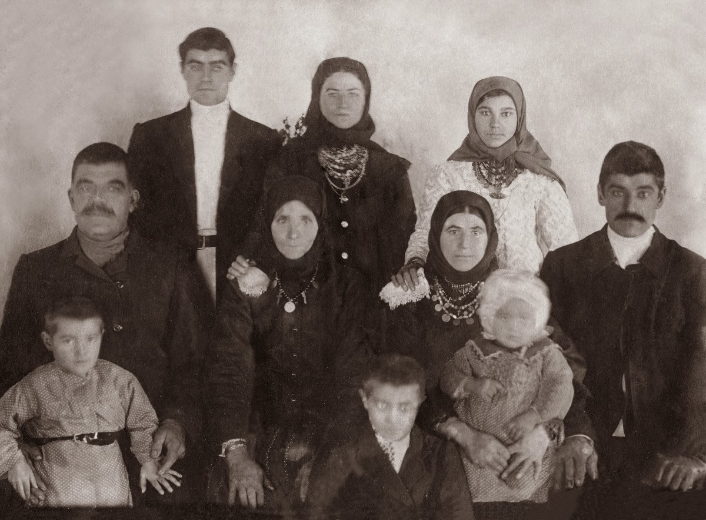
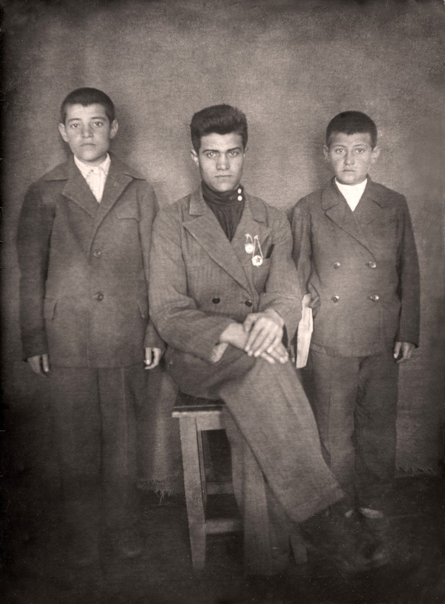

Сербинов Иван Федорович
Родился: 10.08.1919, с. Зеленое (с. Зеленовка)
Умер: 18.10.1997, г. Челябинск (онкология)
Род: Сербиновы
Продолжительность жизни: 78
Место жительства: г. Челябинск
Основное занятие: Инженер - электрик
родился в с. Зеленовка, В мае 1931 года вместе с родителями раскулачен и в июне 1931 под конвоем года выслан в Челябинскую область, г. Копейск, пос. шахты 205.
В июне 1941 г. призван в трудармию.
Окончил техникум, работал инженером во Втором Челябинском монтажном управлении треста "Южуралэлектромонтаж".
Жил в своем доме на ул. Маршальской в Плановом поселке города Челябинска, держал голубей.
Отец: Сербинов Федор Иванович
Мать: Сербинова (Плачкова) Мария Филипповна
Единокровная сестра: Сербинова Надежда Федоровна
Единокровный брат: Сербинов Стефан Федорович
Единокровная сестра: Сербинова Мария Федоровна
Брат: Сербинов Степан Федорович
Сестра: Сербинова Елена Федоровна
Брат: Сербинов Дмитрий Федорович
Брат: Сербинов Даниил Федорович
Брат: Сербинов Александр Федорович
Жена: Сербинова (Макрушникова) Александра Сергеевна
Дочь: Сербинова Лидия Ивановна
Сын: Сербинов Виктор Иванович
Семья Сербинова Ивана Федоровича 1873 г.р.: около 1929, с. Зеленое (с. Зеленовка). Рукой Сербинова Александра Федоровича на обороте: 1. Иван Федорович (дедушка) 1870-1932 2. Василий Иванович (дядя) 3. Степанида Ивановна (бабушка) 1870-1932 3. Евдокия (тетя жена В.И.) 5. Мама 1895-1975 29/12/75 6. Надежда Федоровна (сестра) 7. Отец (1895-1965) 28/10/65.  Сербиновы Иван и Даниил Федоровичи: 04.1933, г. Копейск. Подпись на обороте: Сербиновы Иван и Даниил Федоровичи: 04.1933, г. Копейск. Подпись на обороте:Апрель 1933 г. Шахта № 205. Сербиновы Даниил, Иван и Александр Федоровичи: около 1940, г. Копейск.  Семья Сербинова Федора Ивановича: 27.12.1940, г. Копейск. Рукой Сербинова Ивана Федоровича на обороте: Семья Сербинова Федора Ивановича: 27.12.1940, г. Копейск. Рукой Сербинова Ивана Федоровича на обороте:Фотография 27/12/40 г. Копейск шахта № 205 Семейная карточка 1. Сербинов Ф.И. 2. Сербинова М.Ф. 3. Сербинов И.Ф. 4. Сербинов Д.Ф. 5. Сербинов А.Ф. |